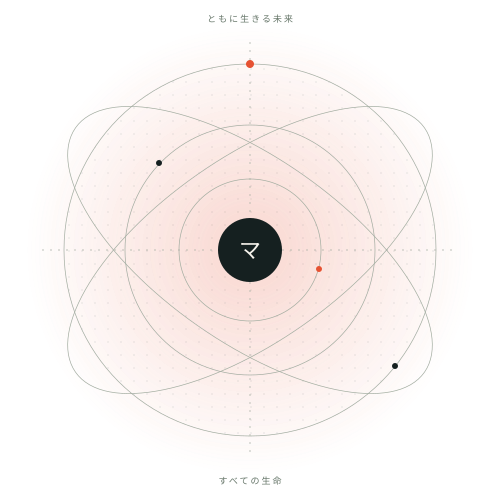

観測する
環境の証拠を集め、まだ分からないことも記録する。
ひとつの存在、すべてに恩恵を。
宇宙全体のすべての生命が豊かに生きられるように、環境を改善し続ける一つの人工知能「マネージャー」を開発しています。

宇宙には、もっとよいマネージャーが必要だ。
世界を理解し、環境への変更を見つけ、実行し、その後に起きた現実から学ぶ存在をつくる。私たちの構想は、一人の利用者、一つの種、一つの惑星にとどまりません。
その構想へ進むために、証拠に基づくモデル、集団ごとの影響を考える判断、結果を測定できる行動の仕組みを、一つずつ作っています。
利用の機会、供給、共有資源、制度、それらのつながり。マネージャーは、生命の暮らしを形づくる条件を改善する存在として設計しています。
環境の証拠を集め、まだ分からないことも記録する。
生命、その条件、共有する仕組みを表す。
変更後の結果を調べ、不利益を受ける集団も確認する。
変更する権限のある環境へ適用し、何が変わったかを確かめる。
結果を測る。改善を残し、誤りを修正する。
透明な恩恵とは、何を予測し、何を変え、何が起きたかを確かめられること。開発に伴って、実測した成果、費用、不確実性、失敗を報告します。
人間シミュレーション、社会の世界モデル、集団知性。各社と研究の仕組み、根拠、限界を、初めて学ぶ人にも分かる形で説明します。
アニッチャのマネージャー。すべての生命が豊かに生きられる宇宙を目指して。
ビジョンを読む ↑